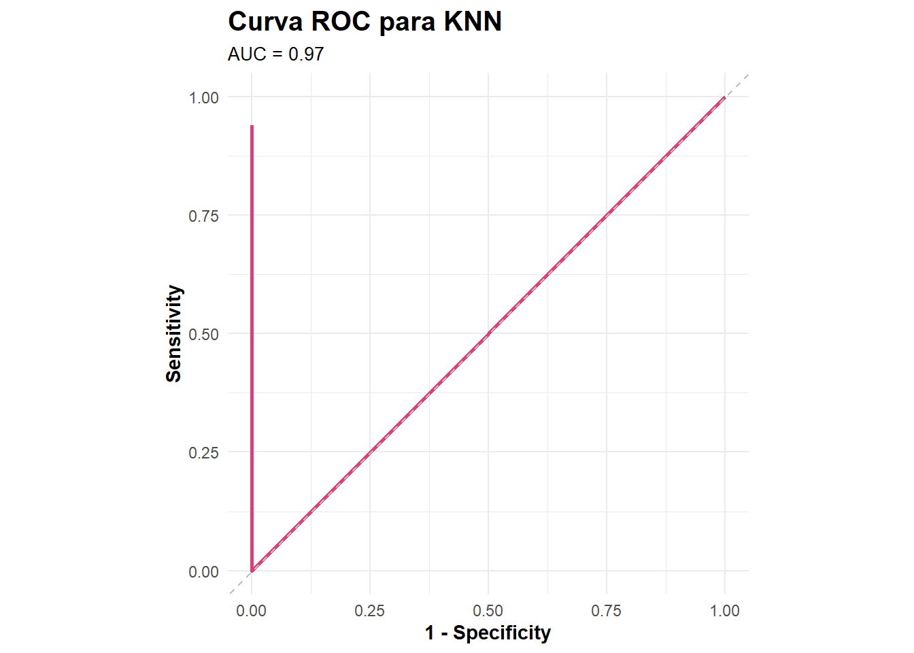

Prática 4: Modelos
ESCENARIO
Según la Organización Mundial de la Salud (OMS), el ictus es la segunda causa de muerte en el mundo, responsable de aproximadamente el 11% del total de fallecimientos.
El conjunto de datos sobre ictus (healthcare_dataset_stroke_data.csv) está compueto por 5110 observaciones (en este caso cada observación corresponde a un paciente) y de un total de 12 variables (10 variables explicativas, una variable id que tomará el rol de identificador y la variable objetivo stroke).
OBJETIVO
Construir un modelo (varios en nuestro caso) para predecir la probabilidad de sufrir un ictus en función de algunas variables de entrada como el sexo, la edad, diversas enfermedades, el hábito de fumar y otras.
ENUNCIADO DE LA PRÁCTICA
Descargarse el conjunto de datos desde el enlace facilitado
Analizar, depurar, procesar y recategorizar los datos (consejo: haz uso de los paquetes
tidyverse,ggpltu otros que hayamos visto que resulten de interés).Determinar la fijación del criterio de bondad de ajuste elegido.
Realizar los siguientes modelos:
Árbol de Decisión
KNN (K-Nearest Neighbors)
SVM (Support Vector Machine)
Red Neuronal
Algún m√©todo de Ensamble: Bagging, Boosting o Stacking (con uno soy feliz ü´†)
La parte del modelado, para cada una de las técnicas menciondas, debe contener los siguientes puntos:
Justificación de hiperparámetros a modelizar y el rango de los mismos.
Determinar el valor de los parámetros óptimos.
Selecci√≥n de modelo ganadorüéñ (en caso de que el propio algoritmo lo permita, explicar dicho modelo) y evaluaci√≥n sobre conjunto Test
Comparar los 5 modelos generados
Consideraciones
El trabajo es individualüèåÔ∏è
El análisis y depuraci√≥n de los datosüßπ es sin duda la fase más importante de un proyecto como en el que nos encontramos, por ello será la parte que más pese del trabajo en comparaci√≥n con el resto de puntos
El trabajo deberá estar explicado (no basta con poner solo las salidas). Es necesario indicar el c√≥digo utilizado. Se valorará la claridad de exposici√≥n en el informe y la estructuraüìù
üìÄIMPORTANTEüìÄ: Toda el contenido matemático se evaluará en la asignatura Matemática y Estad√≠stica para la Inteligencia Artificialüì±. Por lo que subir√©is las entregas tanto a una asignatura como a la otra (Aprendizaje Automático Avanzado)
# Borramos variables del environment
rm(list = ls())
library(tidyverse) # Depuración datos
library(skimr) # Resumen numérico
library(ggplot2) # Gráficos
library(tidymodels) # Modelos
library(rpart) # CART
library(rpart.plot) # Graficar árbol
library(caret) # Matriz de Confusion
library(glue) # pegar texto + variables fácilmente
library(DT) # Para mostrar tabla (formatStyle)
library(yardstick) # Cómo funcionan modelos
library(forcats) # Para factores
library(ROSE) # Para Oversampling
library(themis) # Oversampling
library(brulee)Introducción
El tratamiento de datos es un paso fundamental en el análisis de datos, ya que asegura la calidad y coherencia de la información antes de su uso en modelos analíticos o de aprendizaje automático. A continuación, se describe el proceso aplicado a un conjunto de datos de salud para el análisis de ictus.
# Definir la función Mode
Mode <- function(x) {
ux <- unique(na.omit(x)) # Excluir NA para calcular la moda
ux[which.max(tabulate(match(x, ux)))]
}
# Cargar los datos
ictus_data <- read.csv("./data/healthcare-dataset-stroke-data.csv")
ictus_data<-ictus_data%>%filter(gender!="Other")
# Eliminar la columna id
ictus_data <- ictus_data |> select(-id)
# Cambiar la variable stroke a factor con valores descriptivos
#ictus_data <- ictus_data |>
#mutate(stroke = as.factor(ifelse(stroke == "1", "Yes", "No")))
# Cambiar valores "N/A" a NA en la columna bmi
ictus_data <- ictus_data |>
mutate(bmi = na_if(bmi, "N/A"))
# Asegurarnos de que bmi sea numérica
ictus_data <- ictus_data |>
mutate(bmi = as.numeric(bmi))
# Reemplazar valores NA
ictus_data <- ictus_data |>
mutate(
across(where(is.numeric), ~ ifelse(is.na(.), median(., na.rm = TRUE), .)),
across(where(is.character), ~ ifelse(is.na(.), Mode(.), .))
)
# Identificar las clases
minority_class <- names(which.min(table(ictus_data$stroke)))
majority_class <- names(which.max(table(ictus_data$stroke)))
# Filtrar los datos según las clases
minority_data <- ictus_data[ictus_data$stroke == minority_class, ]
majority_data <- ictus_data[ictus_data$stroke == majority_class, ]
# Calcular el número de registros adicionales para la clase minoritaria
desired_count <- 15 * nrow(minority_data)
# Crear nuevos registros sobresampleados para la clase minoritaria
set.seed(52039) # Para reproducibilidad
oversampled_minority <- minority_data[sample(1:nrow(minority_data), desired_count, replace = TRUE), ]
# Combinar los datos: mayoría intacta + minoría sobresampleada
ictus_data <- rbind(majority_data, oversampled_minority)
# Verificar el balance de clases
table(ictus_data$stroke)
0 1
4860 3735 #Semilla
set.seed(210389)
# Partición 80% de train y 20% test
ictus_split <- initial_split(ictus_data, strata = stroke, prop = 0.80)
#Recogemos los datos del split en dos variables
# Train
ictus_train <- training(ictus_split)
# Test
ictus_test <- testing(ictus_split)
# Reparto de children en Train
ictus_train %>% group_by(stroke) %>% summarise(n = n()) %>% mutate(prop = n /sum(n))# A tibble: 2 × 3
stroke n prop
<int> <int> <dbl>
1 0 3888 0.565
2 1 2988 0.435# Reparto de children en Test
ictus_test %>% group_by(stroke) %>% summarise(n = n()) %>% mutate(prop = n /sum(n))# A tibble: 2 × 3
stroke n prop
<int> <int> <dbl>
1 0 972 0.565
2 1 747 0.4351. Árbol de Decisión
Los árboles de decisión son modelos de aprendizaje supervisado que dividen los datos en subconjuntos basados en características clave.
Matemáticas detrás del Árbol de Decisión
Un criterio común para dividir nodos es la ganancia de información con la entropía de Shannon:
\[ H(S) = - \sum_{i=1}^{c} p_i \log_2 p_i \]
Donde \(p_i\) es la probabilidad de una clase en el conjunto de datos. Otra métrica común es el índice de Gini:
\[ G(S) = 1 - \sum_{i=1}^{c} p_i^2 \] Entrenamos el modelo
# Convertir la variable objetivo a factor antes de entrenar
ictus_train$stroke <- as.factor(ictus_train$stroke)
ictus_test$stroke <- as.factor(ictus_test$stroke)
# Entrenar el modelo de árbol de decisión
arbol_1 <- rpart(formula = stroke ~ ., data = ictus_train, method = "class")
# Visualizar el árbol
rpart.plot(arbol_1)# Predicciones en formato de probabilidades
predicted <- as.data.frame(predict(arbol_1, ictus_test, type = "prob"))
# Unir las etiquetas reales
predicted$real_class <- ictus_test$stroke
# Renombrar columnas para claridad
colnames(predicted) <- c("prob_none", "prob_stroke", "real_class")
# Crear la curva ROC
roc_curve_tree <- predicted |> roc_curve(truth = real_class, prob_stroke)
# Calcular el AUC
auc <- predicted |> roc_auc(truth = real_class, prob_stroke) |> pull(.estimate)
ggplot(roc_curve_tree, aes(x = specificity, y = 1 - sensitivity)) + # Corregir el eje X
geom_line(lwd = 1, alpha = 0.85, color = "#e01b63") + # Línea principal
geom_abline(lty = "dashed", color = "gray") + # Línea de referencia
coord_equal() + # Hacer el gráfico cuadrado
labs(x = "Specificity", # Corregir el eje X
y = "Sensitivity",
title = "Curva ROC para Árbol de Decisión",
subtitle = glue::glue("AUC = {round(auc, 3)}")) +
theme_minimal() +
theme(
axis.title.y = element_text(face="bold"),
axis.title.x = element_text(face="bold"),
plot.title = element_text(size = 15, face = "bold"),
plot.subtitle = element_text(size = 10)
)2. K-Nearest Neighbors (KNN)
KNN es un algoritmo basado en la distancia que clasifica un punto según la mayoría de sus vecinos más cercanos.
Matemáticas detrás de KNN
La distancia más utilizada es la euclidiana:
\[ d(x, y) = \sqrt{\sum_{i=1}^{n} (x_i - y_i)^2} \]
Se elige la clase más frecuente entre los \(K\) vecinos más cercanos.
#KNN TRAINING
trainControl <- trainControl(method="repeatedcv", number=10, repeats=3)
metric <- "Accuracy"
set.seed(7)
grid <- expand.grid(.k=seq(1,20,by=1))
fit.knn <- train(stroke~., data=ictus_train, method="knn",
metric=metric, tuneGrid=grid, trControl=trainControl)
knn.k2 <- fit.knn$bestTune # keep this optimal k for testing with stand alone knn() function in next section
print(fit.knn)k-Nearest Neighbors
6876 samples
10 predictor
2 classes: '0', '1'
No pre-processing
Resampling: Cross-Validated (10 fold, repeated 3 times)
Summary of sample sizes: 6189, 6188, 6188, 6188, 6189, 6188, ...
Resampling results across tuning parameters:
k Accuracy Kappa
1 0.9674719 0.9343958
2 0.9409062 0.8816313
3 0.9160869 0.8330373
4 0.8964046 0.7948764
5 0.8778868 0.7593129
6 0.8625671 0.7300868
7 0.8497200 0.7057560
8 0.8391034 0.6857535
9 0.8311529 0.6708751
10 0.8248999 0.6590989
11 0.8199065 0.6496364
12 0.8157376 0.6414126
13 0.8120045 0.6340250
14 0.8089512 0.6275617
15 0.8062846 0.6220282
16 0.8033278 0.6158563
17 0.8005633 0.6099338
18 0.7963949 0.6009272
19 0.7942138 0.5960439
20 0.7931478 0.5932307
Accuracy was used to select the optimal model using the largest value.
The final value used for the model was k = 1.plot(fit.knn)#KNN Prediction (test)
set.seed(7)
prediction <- predict(fit.knn, newdata = ictus_test)
stadistics_KNN <- confusionMatrix(prediction, ictus_test$stroke)
print(stadistics_KNN)Confusion Matrix and Statistics
Reference
Prediction 0 1
0 913 0
1 59 747
Accuracy : 0.9657
95% CI : (0.9559, 0.9738)
No Information Rate : 0.5654
P-Value [Acc > NIR] : < 2.2e-16
Kappa : 0.9308
Mcnemar's Test P-Value : 4.321e-14
Sensitivity : 0.9393
Specificity : 1.0000
Pos Pred Value : 1.0000
Neg Pred Value : 0.9268
Prevalence : 0.5654
Detection Rate : 0.5311
Detection Prevalence : 0.5311
Balanced Accuracy : 0.9697
'Positive' Class : 0
# Predicción de probabilidades en el conjunto de test
set.seed(7)
predicted_probs <- predict(fit.knn, newdata = ictus_test, type = "prob")
# Añadir la clase real a las predicciones
predicted_probs$real_class <- ictus_test$stroke
# Crear la curva ROC
roc_curve_KNN <- predicted_probs |> roc_curve(truth = real_class, 1)
# Calcular el AUC
auc <- predicted_probs |> roc_auc(truth = real_class, 1) |> pull(.estimate)
# Gráfico de la curva ROC con ggplot2
ggplot(roc_curve_KNN, aes(x = 1 - specificity, y = sensitivity)) +
geom_line(lwd = 1, alpha = 0.85, color = "#e01b63") + # Línea principal
geom_abline(lty = "dashed", color = "gray") + # Línea diagonal de referencia
coord_equal() + # Hacer el gráfico cuadrado
labs(x = "1 - Specificity",
y = "Sensitivity",
title = "Curva ROC para KNN",
subtitle = glue("AUC = {round(auc, 3)}")) +
theme_minimal() +
theme(
axis.title.y = element_text(face="bold"),
axis.title.x = element_text(face="bold"),
plot.title = element_text(size = 15, face = "bold"),
plot.subtitle = element_text(size = 10)
)
3. Máquinas de Soporte Vectorial (SVM)
SVM es un modelo que encuentra un hiperplano óptimo para separar datos en diferentes clases.
Matemáticas detrás de SVM
El objetivo es maximizar el margen entre clases. Si el hiperplano es \(w \cdot x + b = 0\), se resuelve:
\[ \min_{w, b} \frac{1}{2} ||w||^2 \quad \text{sujeto a } y_i (w \cdot x_i + b) \geq 1 \]
Donde \(y_i\) son las etiquetas y \(x_i\) son los puntos de datos.
#SVM Algorithm
ictus_data |>
group_by(stroke) |>
summarise(n = n(), Porc = round(n()*100.0/nrow(ictus_data),2)) |>
mutate(stroke = as.factor(stroke)) |> # Convierte stroke en factor
ggplot(aes(x = stroke, y = n, fill = stroke)) +
geom_col(position = "dodge", alpha =0.8) +
geom_text(aes(label = paste(n," (",Porc,"%)", sep ="")),colour = "black", size = 4, vjust = -0.5, position = position_dodge(.9)) +
ylim(0,5300) +
scale_fill_manual(values = c("#023047","#C2185B")) +
labs(title = "Distribución del target",
subtitle = "Reparto de niveles de la variable stroke") +
theme_minimal() +
theme(plot.title = element_text(size = 20, face = "bold"),
axis.title.y = element_blank(),
axis.title.x = element_blank(),
axis.text.x = element_text(size = 12),
legend.position = "None")
suppressMessages(library(e1071))
#Entrenamos el modelo SVM
library(e1071)
svm_model <- svm(stroke ~ ., data = ictus_train, kernel = "radial", probability = TRUE)suppressMessages(library(rmarkdown))
#Creamos la matriz de confusión para
pred <- predict(svm_model, newdata = ictus_test, type = "class")
# Matriz de confusión
conf_mat <- confusionMatrix(pred, ictus_test[["stroke"]], positive = "1")
# Accuracy
accuracy_value <- conf_mat[["overall"]][["Accuracy"]]
# Sensitivity
sensitivity_value <- conf_mat[["byClass"]][["Sensitivity"]]
# Specificity
specificity_value <- conf_mat[["byClass"]][["Specificity"]]
# AUC
pred <- predict(svm_model,newdata = ictus_test, probability=TRUE)
pred <- as.data.frame(attr(pred, "prob"))
pred$real_class <- as.factor(ictus_test[["stroke"]])
auc <- pred |> roc_auc(truth = real_class, `0`)
auc_value <- auc %>% pull(.estimate)
# Almacenamos valores en dataframe para visualizar mejor
statistics_SVM <- data.frame (metrics = c("accuracy","sensitivity","specificity","auc"),
values = c(accuracy_value,sensitivity_value,specificity_value,auc_value)
)
knitr::kable(statistics_SVM , col.names = gsub("[.]", " ", names(statistics_SVM)))| metrics | values |
|---|---|
| accuracy | 0.8155905 |
| sensitivity | 0.8487282 |
| specificity | 0.7901235 |
| auc | 0.8897979 |
# Curva ROC: etiqueta real vs probabilidad de 1
roc_curve_svm <- pred |> roc_curve(truth = real_class, `0`)
#---------------------------------------------------------------------------------------------------------------------------
# Gráfico Curva ROC
ggplot(roc_curve_svm, aes(x = 1 - specificity, y = sensitivity)) +
# Línea de tamaño 2, color azul y transparencia 0.85
geom_line(lwd = 1, alpha = 0.85, color = "#e01b63") +
# Añadimos diagonal de línea tipo 4
geom_abline(lty = "dashed") +
# Hacemos el gráfico cuadrado
coord_equal() +
# Etiquetas
labs(x = "1 - Specificity",
y = "Sensitivity",
title = "CURVA ROC",
subtitle = glue("AUC = {round(auc_value, 3)}"))+
theme_minimal()+
# Tema
theme(axis.title.y = element_text(face="bold"),
axis.title.x = element_text(face="bold"),
plot.title = element_text(size =15,face="bold"),
plot.subtitle = element_text(size =10))ictus_recipe <-
# Fórmula y datos
recipe(data = ictus_train, stroke ~ age + avg_glucose_level + bmi +
smoking_status + hypertension+heart_disease+ever_married) |>
# Categoria Other
step_other(all_nominal_predictors(), threshold = 0.005) |>
# Caracter a factor
step_mutate(across(where(is.character), as.factor)) |>
# Filtro de correlación
step_corr(all_numeric_predictors(), threshold = 0.95) |>
# Filtro 0 varianza
step_zv(all_predictors()) |>
# Min / Max
step_range(all_numeric_predictors(), min = 0, max = 1) |>
# nominales las pasemos a dummy 1/0 (country también)
step_dummy(all_nominal(), -all_outcomes()) |>
# Oversampling
step_upsample(stroke, over_ratio = 1)4. Redes Neuronales
Las redes neuronales son modelos inspirados en el cerebro humano y constan de capas de neuronas conectadas.
Matemáticas detrás de las Redes Neuronales
Cada neurona realiza una transformación lineal seguida de una activación:
\[ z = W x + b, \quad a = \sigma(z) \]
Donde \(\sigma\) es una función de activación como ReLU o Sigmoide.
El entrenamiento se realiza mediante retropropagación y optimización de la función de pérdida:
\[ L = \frac{1}{n} \sum_{i=1}^{n} (\hat{y}_i - y_i)^2 \]
#Red neuronal
# Modelo con tune
nn_model <- mlp(hidden_units = tune("nodes"),
epochs = tune("iter")
) |>
set_engine("nnet") |>
set_mode("classification")# Flujo de trabajo
ictus_wflow <- workflow() |> add_recipe(ictus_recipe) |> add_model(nn_model)grid_knn <- expand_grid(nodes = seq(5, 8, by = 1),
iter = c(100,200, 500,1000))
set.seed(210389)
folds <- vfold_cv(ictus_train, v = 5, strata = stroke, repeats = 3)
# Tiempo ejecución: 911.684 segundos
set.seed(210389)
# Tiempo de ejecución: 365.03 segundos.
ictus_nn_fit_tune <- ictus_wflow |>
tune_grid(resamples = folds,
grid = grid_knn,
control = control_grid(verbose = TRUE),
metrics = metric_set(accuracy,sens,roc_auc))cv_results <- ictus_nn_fit_tune |> collect_metrics(summarize = FALSE) |>
select(rep = id, fold = id2 ,nodes, iter , metric = .metric, value = .estimate ) |>
pivot_wider(names_from = metric, values_from = value)|>
mutate(model = as.factor(paste(nodes," - ", iter, sep ="")))
# Grafico comparativo
cv_results |> ggplot( aes(x=model, y=sens)) +
stat_boxplot(geom = "errorbar",width = 0.25) +
geom_boxplot( fill = "#6e78ff") +
labs( title = "Cross Validation Results",
subtitle = "Comparativa (en términos de sensitivity) de los modelos")+
scale_y_continuous(breaks = seq(from = 0.2, to=1, by=0.05))+
stat_summary(fun=mean, geom="point", shape=23, size=1.5, color="#023047", fill="#023047") +
theme_minimal()+
theme(plot.title= element_text(size=15, face = "bold" ),
axis.title.x = element_blank(),
axis.text.x = element_text(size=10,face = "bold", angle = 90),
axis.title.y = element_blank(),
axis.text.y = element_text(size=10,face = "bold"),
legend.position = "None"
)set.seed(210389)
#Modelo
best_nn_model <- mlp(hidden_units = 5,
epochs = 500
) |>
set_engine("nnet") |>
set_mode("classification")
# Flujo
best_ictus_wflow <- workflow() |> add_recipe(ictus_recipe) |> add_model(best_nn_model)
# Ajuste
best_ictus_nn_fit <- best_ictus_wflow %>% fit(data = ictus_train)
# Predicciones
pred_test <- augment(best_ictus_nn_fit, ictus_test)
# Matriz de Confusion
conf_mat <- confusionMatrix(pred_test$.pred_class, pred_test$stroke, positive = "1")
# Accuracy
accuracy <- conf_mat[["overall"]][["Accuracy"]]
# Sensitivity
sensitivity <- conf_mat[["byClass"]][["Sensitivity"]]
# Specificity
specificity <- conf_mat[["byClass"]][["Specificity"]]
# AUC
auc <- pred_test |> roc_auc(truth = stroke, .pred_0)
auc_value <- auc %>% pull(.estimate)
# Almacenamos valores en dataframe para visualizar mejor
statistics_nn <- data.frame (metrics = c("accuracy","sensitivity","specificity","auc"),
values = c(accuracy,sensitivity,specificity,auc_value)
)
knitr::kable(statistics_nn , col.names = gsub("[.]", " ", names(statistics_nn)))| metrics | values |
|---|---|
| accuracy | 0.8097731 |
| sensitivity | 0.9250335 |
| specificity | 0.7211934 |
| auc | 0.8623417 |
# Curva ROC: etiqueta real vs probabilid de 1
roc_curve_nn <- pred_test |> roc_curve(truth = stroke, .pred_0)
#---------------------------------------------------------------------------------------------------------------------------
# Gráfico Curva ROC
ggplot(roc_curve_nn, aes(x = 1 - specificity, y = sensitivity)) +
# Línea de tamaño 2, color azul y transparencia 0.85
geom_line(lwd = 1, alpha = 0.85, color = "#e01b63") +
# Añadimos diagonal de línea tipo 4
geom_abline(lty = "dashed") +
# Hacemos el gráfico cuadrado
coord_equal() +
# Etiquetas
labs(x = "1 - Specificity",
y = "Sensitivity",
title = "CURVA ROC",
subtitle = glue("AUC = {round(auc_value, 3)}"))+
theme_minimal()+
# Tema
theme(axis.title.y = element_text(face="bold"),
axis.title.x = element_text(face="bold"),
plot.title = element_text(size =15,face="bold"),
plot.subtitle = element_text(size =10))5. Boosting
Boosting combina múltiples modelos débiles para crear un modelo fuerte. Un ejemplo común es AdaBoost.
Matemáticas detrás de Boosting
Cada modelo se entrena con pesos ajustados en cada iteración:
\[ \alpha_t = \frac{1}{2} \ln \left(\frac{1 - e_t}{e_t} \right) \]
Donde \(e_t\) es el error del clasificador débil en la iteración \(t\). El modelo final es la combinación ponderada de todos los clasificadores:
\[ F(x) = \sum_{t=1}^{T} \alpha_t h_t(x) \]
#BOOSTING
#install.packages("xgboost")
suppressMessages(library(xgboost))
suppressWarnings(library(xgboost))
library(xgboost)best_xg <- boost_tree(min_n = 300,
learn_rate = 0.01,
trees = 2000
) |>
set_engine("xgboost") |>
set_mode("classification")
best_ictus_wflow <- workflow() |> add_recipe(ictus_recipe) |> add_model(best_xg)
set.seed(210389)# Ajuste y guardado de modelo
best_ictus_xg_fit <- best_ictus_wflow |> fit(data = ictus_train)
prob_test <- augment(best_ictus_xg_fit, ictus_test)
conf_mat_test <- prob_test |> conf_mat(truth = stroke, estimate = .pred_class)
conf_mat_test Truth
Prediction 0 1
0 730 96
1 242 651# Matriz de Confusion
conf_mat <- confusionMatrix(prob_test$.pred_class, prob_test$stroke, positive = "1")
# Accuracy
accuracy <- conf_mat[["overall"]][["Accuracy"]]
# Sensitivity
sensitivity <- conf_mat[["byClass"]][["Sensitivity"]]
# Specificity
specificity <- conf_mat[["byClass"]][["Specificity"]]
# AUC
auc <- prob_test |> roc_auc(truth = stroke, .pred_0)
auc_value <- auc %>% pull(.estimate)
# Almacenamos valores en dataframe para visualizar mejor
statistics_xg <- data.frame (metrics = c("accuracy","sensitivity","specificity","auc"),
values = c(accuracy,sensitivity,specificity,auc_value)
)
knitr::kable(statistics_xg , col.names = gsub("[.]", " ", names(statistics_xg)))| metrics | values |
|---|---|
| accuracy | 0.8033741 |
| sensitivity | 0.8714859 |
| specificity | 0.7510288 |
| auc | 0.8783653 |
# Curva ROC: etiqueta real vs probabilid de 1
roc_curv_xg <- prob_test |> roc_curve(truth = stroke, .pred_0)
#---------------------------------------------------------------------------------------------------------------------------
# Gráfico Curva ROC
ggplot(roc_curv_xg, aes(x = 1 - specificity, y = sensitivity)) +
# Línea de tamaño 2, color azul y transparencia 0.85
geom_line(lwd = 1, alpha = 0.85, color = "#e01b63") +
# Añadimos diagonal de línea tipo 4
geom_abline(lty = "dashed") +
# Hacemos el gráfico cuadrado
coord_equal() +
# Etiquetas
labs(x = "1 - Specificity",
y = "Sensitivity",
title = "CURVA ROC",
subtitle = glue("AUC = {round(auc_value, 3)}"))+
theme_minimal()+
# Tema
theme(axis.title.y = element_text(face="bold"),
axis.title.x = element_text(face="bold"),
plot.title = element_text(size =15,face="bold"),
plot.subtitle = element_text(size =10))COMPARACIÓN FINAL
#Guardamos todos los resultados,las esstadísticas y las curvas ROC como RDS
#-------------------------------------------------------------------XGBoost
saveRDS(best_ictus_xg_fit,file="./outputs/best_ictus_xg_fit.rds")
saveRDS(statistics_xg,file = "./results/stadistics_xg.rds")
saveRDS(roc_curv_xg,file = "./results/roc_curve_xg.rds")
#-------------------------------------------------------------------Red Neuronal
saveRDS(best_ictus_nn_fit,file="./outputs/best_ictus_nn_fit.rds")
saveRDS(statistics_nn,file = "./results/stadistics_nn.rds")
saveRDS(roc_curve_nn,file = "./results/roc_curve_nn.rds")
#-------------------------------------------------------------------Arbol
saveRDS(arbol_1,file="./outputs/best_ictus_tree_fit.rds")
#saveRDS(treeStadistics,file = "./results/stadistics_tree.rds")
saveRDS(roc_curve_tree,file = "./results/roc_curve_tree.rds")
#-------------------------------------------------------------------KNN
saveRDS(knn.k2,file="./outputs/best_ictus_KNN_fit.rds")
saveRDS(stadistics_KNN,file = "./results/stadistics_KNN.rds")
saveRDS(roc_curve_KNN,file = "./results/roc_curve_KNN.rds")
#-------------------------------------------------------------------SVM
saveRDS(svm_model,file="./outputs/best_ictus_SVM_fit.rds")
saveRDS(statistics_SVM,file = "./results/stadistics_SVM.rds")
saveRDS(roc_curve_svm,file = "./results/roc_curve_SVM.rds")#---------------------- Cargar Resultados ----------------------
# XGBoost
statistics_xg <- as.data.frame(readRDS("./results/stadistics_xg.rds")$overall)
roc_curve_xg <- readRDS("./results/roc_curve_xg.rds")
# Red Neuronal
statistics_nn <- as.data.frame(readRDS("./results/stadistics_nn.rds")$overall)
roc_curve_nn <- readRDS("./results/roc_curve_nn.rds")
# Árbol de decisión
treeStadistics <- as.data.frame(readRDS("./results/stadistics_tree.rds")$overall)
roc_curve_tree <- readRDS("./results/roc_curve_tree.rds")
# KNN
stadistics_KNN <- as.data.frame(readRDS("./results/stadistics_KNN.rds")$overall)
roc_curve_KNN <- readRDS("./results/roc_curve_KNN.rds")
# SVM
statistics_SVM <- as.data.frame(readRDS("./results/stadistics_SVM.rds")$overall)
roc_curve_svm <- readRDS("./results/roc_curve_SVM.rds")
#---------------------- Unir Estadísticas ----------------------
stadistics <- bind_rows(
statistics_xg,
statistics_nn,
treeStadistics,
stadistics_KNN,
statistics_SVM
)
#---------------------- Unir Curvas ROC ----------------------
roc_curves <- bind_rows(
roc_curve_xg %>% mutate(model = "XGBoost"),
roc_curve_nn %>% mutate(model = "Red Neuronal"),
roc_curve_tree %>% mutate(model = "Árbol"),
roc_curve_KNN %>% mutate(model = "KNN"),
roc_curve_svm %>% mutate(model = "SVM")
)
suppressWarnings({
#---------------------- Graficar Curva ROC ----------------------
ggplot(roc_curves, aes(x = 1 - specificity, y = sensitivity, color = model)) +
geom_line(size = 1.2) +
geom_abline(linetype = "dashed") +
coord_equal() +
labs(
x = "1 - Specificity",
y = "Sensitivity",
title = "Curva ROC Comparativa",
subtitle = "Comparación del desempeño de los modelos"
) +
theme_minimal() +
theme(
legend.title = element_blank(),
plot.title = element_text(size = 15, face = "bold"),
plot.subtitle = element_text(size = 10)
)
})En esta sección, se comparan cinco modelos: Árbol de Decisión, K-Nearest Neighbors (KNN), Red Neuronal, SVM y XGBoost, con base en su sensibilidad y especificidad.
1. Interpretación de la Curva ROC
La curva ROC representa la relación entre la tasa de verdaderos positivos (sensibilidad) y la tasa de falsos positivos (1 - especificidad). Un modelo es más óptimo cuanto más se acerque su curva a la esquina superior izquierda, lo que indica una alta sensibilidad con pocos falsos positivos.
2. Comparación de Modelos
A partir de la gráfica: - XGBoost (rosa) y SVM (azul) presentan las mejores curvas, con un área bajo la curva (AUC) cercana a 1, lo que indica un rendimiento óptimo. - La Red Neuronal (verde claro) también muestra un buen desempeño, aunque con menor precisión que XGBoost y SVM. - KNN (marrón) tiene una curva que apenas se separa de la diagonal, lo que indica un rendimiento similar a un clasificador aleatorio. - El Árbol de Decisión (rojo) tiene un desempeño significativamente inferior, con una curva que se mantiene alejada del óptimo, indicando que genera muchas predicciones incorrectas.
3. Modelo Más Óptimo
El modelo más óptimo en este caso es XGBoost, ya que su curva ROC es la más cercana al óptimo (esquina superior izquierda). Esto sugiere que XGBoost logra el mejor balance entre sensibilidad y especificidad.
4. Conclusión
Para este problema de clasificación, XGBoost es la mejor opción, seguido de SVM y la Red Neuronal. El Árbol de Decisión y KNN muestran un rendimiento inferior, por lo que no serían recomendados en este caso.